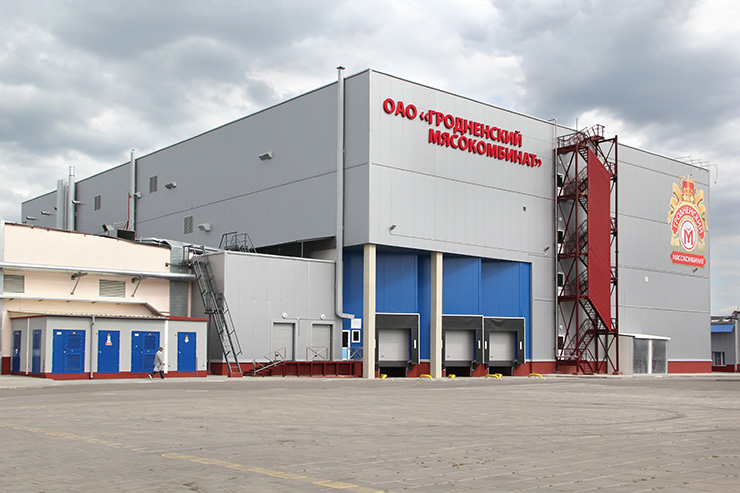
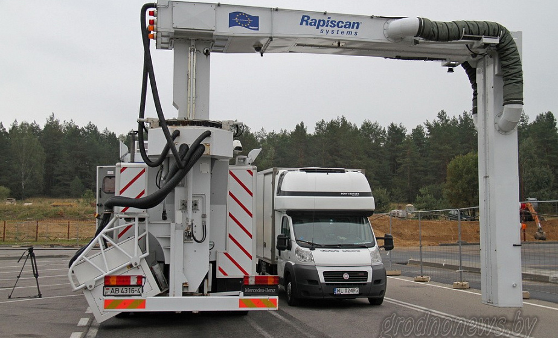

2015
В микрорайоне Ольшанка в Гродно открыт детский сад
Здесь созданы все условия для качественного оказания образовательных услуг и всестороннего развития ребят: эстетического, физического и интеллектуального. Есть музыкальный зал, бассейн и компьютерный класс.
В Гродно открыта новая средняя школа №40
На улице – футбольное поле с естественным газоном, две баскетбольные и три волейбольные площадки, хоккейная коробка, которая в летнее время трансформируется в площадку для игры в мини-футбол и волейбол, теннисный корт и мини-площадка для изучения детьми ПДД. В помещении школы – большой спортивный зал, который трансформируется в две баскетбольные площадки. Кроме того, в школе есть малый спортивный зал и два тренажерных зала. Рядом построено здание, где есть два бассейна: большая и малая ванны.

Завершен первый этап модернизации ОАО «Щучинский маслосырзавод»
Проведена реконструкция солильного отделения на 60 тонн сыра в сутки с устройством камеры для хранения сыра на 800 тонн. Положено начало глобального перевооружения завода, которое позволит увеличить объем переработки молока вдвое.

Новый цех по производству сыра открылся на Ошмянском сыродельном заводе
Это позволило расширить экспортный потенциал производителя и ассортиментную линейку.
В ОАО «Гродненский мясокомбинат» открыт новый цех сырокопченых изделий

Мощность составляет 500 тонн продукции в сутки. Реализован крупнейший в стране инвестиционный проект в рамках программы модернизации мясо-молочной отрасли.
В Островце построены новое школьное здание на 510 мест и детский сад
Новоселье справила гимназия. Рядом с учебным заведением построено здание современного детского яслей-сада на 190 мест. Оба объекта для детей возведены досрочно, в строительство вложено около 150 миллиардов рублей.
Полностью введена в эксплуатацию новая дорога Р52

Благодаря этому строящаяся Белорусская АЭС получила новые подъездные пути со стороны трасс М7 Минск-Вильнюс и Р45 Вильнюс-Полоцк. Полная протяженность новой дороги – 50 километров с юго-восточным обходом Островца.
В Гродно на улице Волковича открыт детский дом семейного типа
Просторный двухэтажный особняк трест «Гродногорстрой» построил за два с половиной месяца.

Монтаж пяти ветроэнергетических установок начался около деревни Грабники Новогрудского района
Крупный инвестиционный проект с участием китайского капитала реализует РУП «Гродноэнерго».

В пункте пропуска «Брузги» начал работу новый стационарный ИДК «Рапискан»
Использование стационарного «Рапискана» значительно увеличивает скорость досмотра грузовиков: сканирование занимает одну минуту, а весь процесс – не более 10 минут. Без вскрытия и разгрузки транспортного средства можно получить его изображение и перевозимых в нем товаров. Мощность стационарного ИДК – 120 машин в смену.

Новое здание инспекции Министерства по налогам и сборам по Гродненской области открылось в Гродно на улице Дубко
Здесь разместились областная инспекция и инспекция по Ленинскому району Гродно. Улучшены условия труда для сотрудников, комфортные условия созданы для посетителей. Из республиканского бюджета на строительство было выделено около 59 миллиардов рублей.
Новый санаторий «Альфа Радон» открылся на Дятловщине
Многофункциональный лечебно-оздоровительный центр, оснащенный современным европейским оборудованием с новейшими методиками лечения и опытными специалистами, в основном специализируется на заболеваниях опорно-двигательного аппарата, гинекологии, органов дыхания. Здравница может одновременно принять около 400 человек.

В Гродно в лесопарке "Пышки" сделали 5-километровую велодорожку
Ее обустройство сделано в рамках проектов трансграничного сотрудничества Литва –Латвия – Беларусь. В целом за последние два года благодаря трансграничным проектам в области оборудовали, промаркировали и подготовили более ста километров трасс для велосипедистов.
На ОАО «Мостовдрев» завершен проект «Реконструкция цеха ДСП с установкой оборудования для производства древесноволокнистых плит (MDF /HDF)».
Проектная мощность 150м3 плит в год, оборудование производства фирмы «DIFFENBACHER», Германия. Выпускаемая плита может частично перерабатываться в ламинированные напольные покрытия, т.е. «ламинат» (оборудование производства Италия «SCM GROUP S.p.A»)